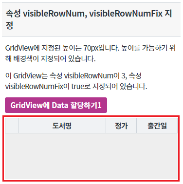
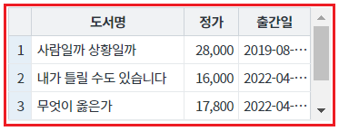
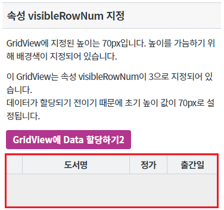
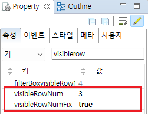
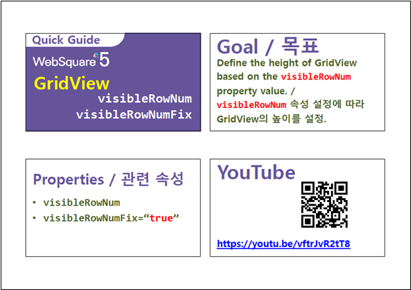

GridView의 초기 높이를 속성 visibleRowNum에 지정된 행의 개수를 바탕으로 설정하는 예제입니다. 데이터가 할당되기 전의 GridView의 높이를 고정할 때 주로 사용됩니다.
이 기능은 아래의 속성으로 사용할 수 있습니다. - visibleRowNum : (속성) 화면에 표현할 행의 개수. - visibleRowNumFix : (속성) 초기 gridView의 높이를 visibleRowNum에 설정한 값에 해당하는 크기만큼 자동으로 늘려주는 설정
속성 visibleRowNum, visibleRowNumFix 지정
속성 visibleRowNum 지정
영역 [속성 visibleRowNum, visibleRowNumFix 지정]의 GridView를 확인합니다.
GridView에 지정된 높이는 70px이지만, 속성 visibleRowNum에 지정된 값인 3을 반영하여 높이가 설정되었습니다.
[브라우저(Chrome) 실행 예시]

버튼 GridView에 Data 할당하기1를 클릭합니다.
초기에 그려진 GridView의 높이가 동일하게 유지된 상태로 데이터가 출력됩니다.
[브라우저(Chrome) 실행 예시]

영역 [속성 visibleRowNum 지정]의 GridView를 확인합니다.
GridView가 지정된 높이, 70px에 맞춰 그려집니다.
[브라우저(Chrome) 실행 예시]

버튼 GridView에 Data 할당하기2를 클릭합니다.
속성 visibleRowNum에 지정된 값인 3을 반영하여 GridView의 높이가 늘어납니다.
[브라우저(Chrome) 실행 예시]
GridView의 속성을 정의합니다.
[필수] visibleRowNum="설정값" //화면에 보여질 행의 수
예시1) visibleRowNum="3" //화면에 보여질 행의 수를 3개로 지정
[필수] visibleRowNumFix="설정값" //[default: true, false] 초기 gridView의 높이를 visibleRowNum에 설정한 값에 해당하는 크기만큼 자동으로 늘려주는 설정
예시) visibleRowNumFix="true"
그림 1.웹스퀘어5 SP5 스튜디오의 Property View(속성창) 예시

[소스 코드 예시]
<!-- gridView 의 소스 본문 예시 --> <w2:gridView visibleRowNumFix="true" visibleRowNum="3" style="height:70px;" defaultCellHeight="24" dataList="data:dlt_books_1"> <!-- 중략 --> </w2:gridView>
visibleRowNum
visibleRowNumFix
getVisibleRowNum( )
[웹스퀘어5 SP5 개발 가이드] GridView
링크 : https://docs1.inswave.com/sp5_user_guide/bc10c1b82c9a2a0b#e1c4658baf7e726f
[웹스퀘어5 SP5 개발 가이드] GridView 초기 height 값 설정
링크 : https://docs1.inswave.com/sp5_user_guide/86bdcf48029b958b#9cfa5fa680920626
GridView 초기 height 값 설정
링크 : https://youtu.be/vftrJvR2tT8
